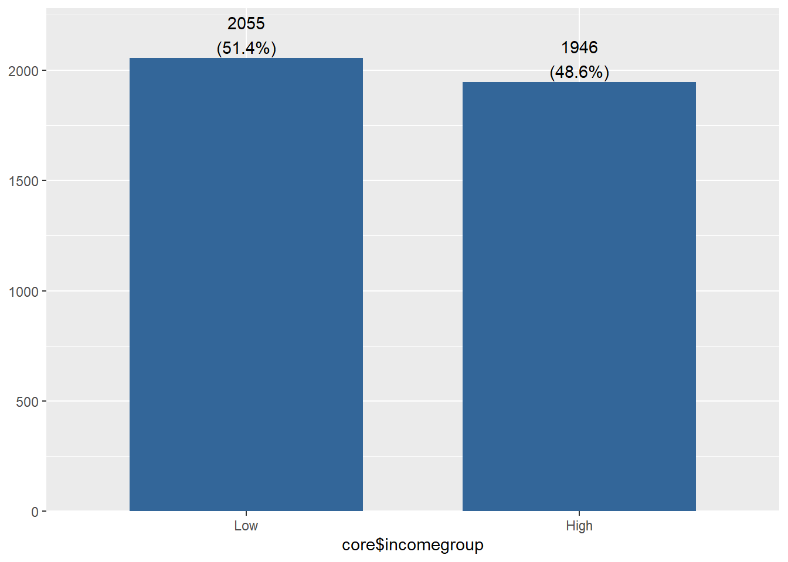
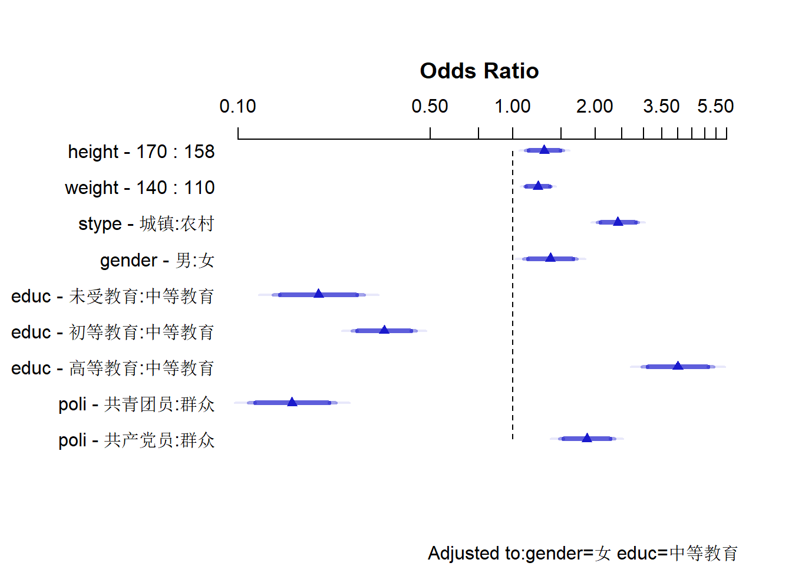
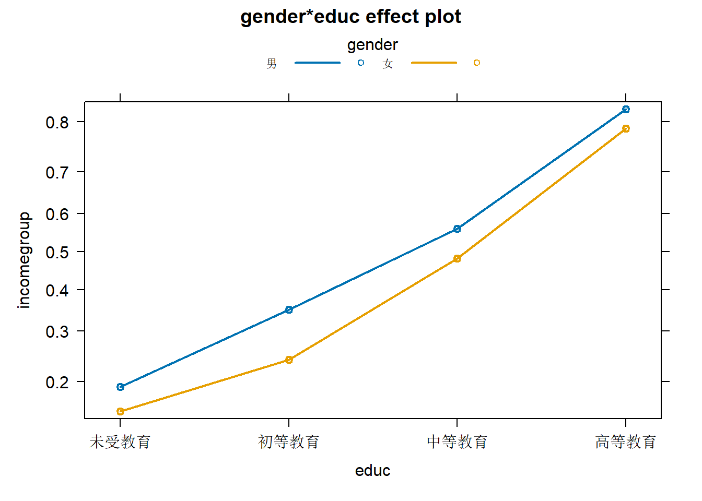
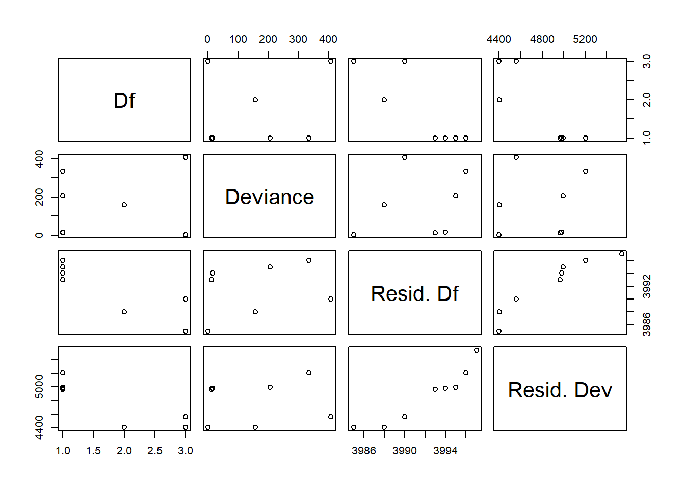
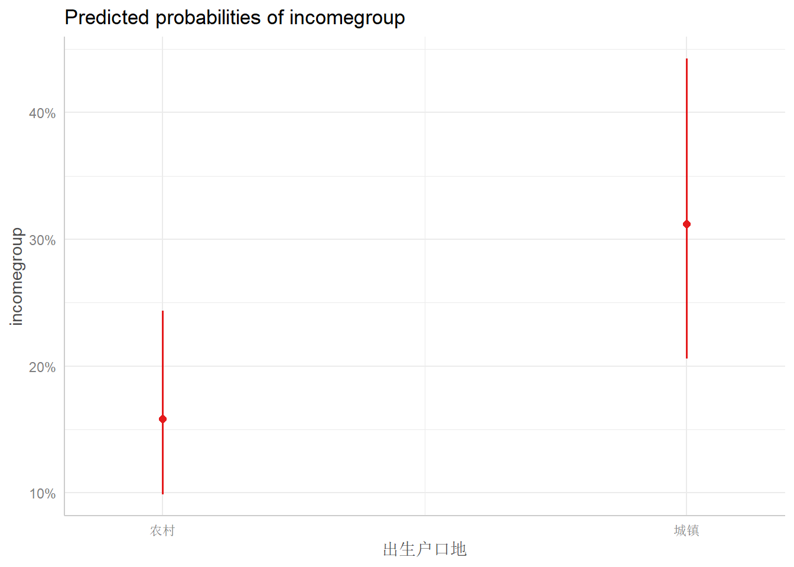
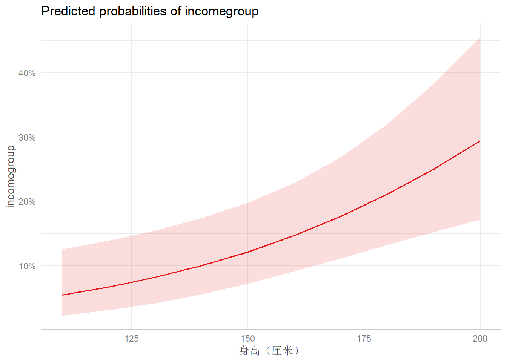
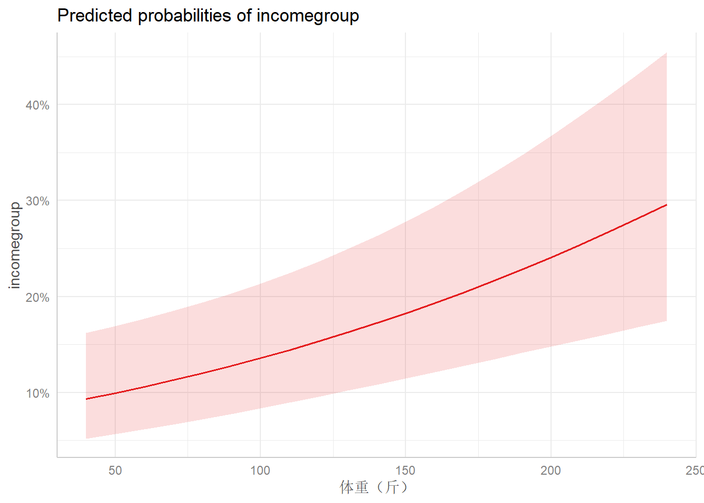
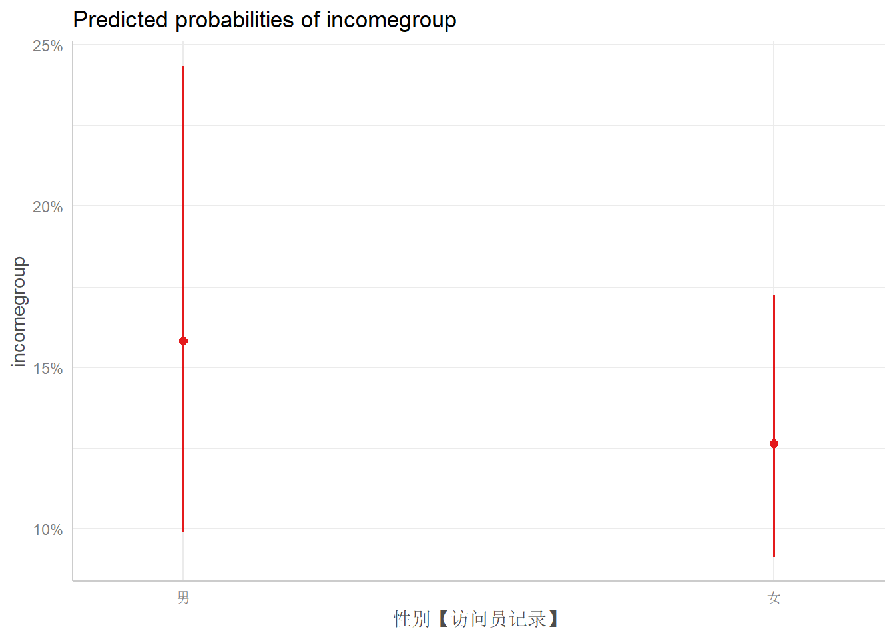
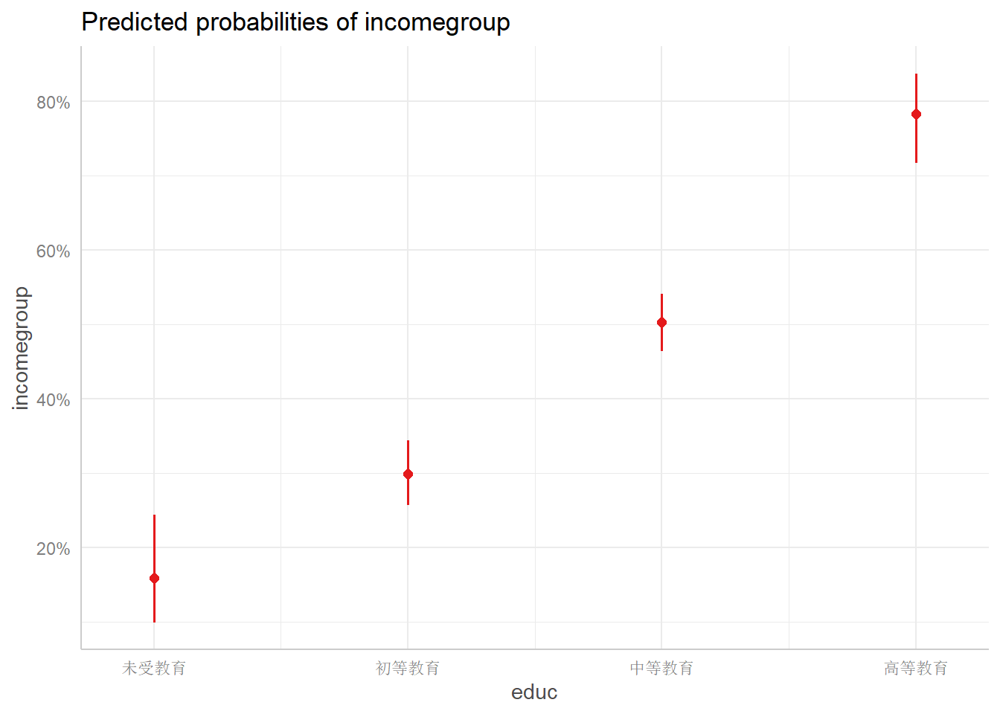
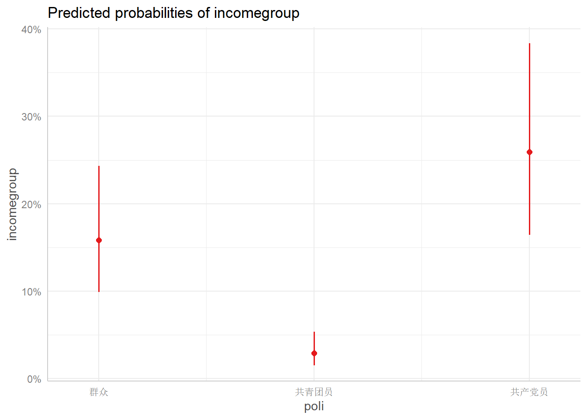

6 二分变量回归
加载数据
load(file = "core.RData")当因变量Y不是连续变量，而是分类变量时，我们就要利用广义线性模型(Generalized Linear Model)进行分析。本书前述模型中的收入变量是连续的数值型变量，现在我们将其重新编码成分类变量，用于后续的建模。
6.1 二值型回归模型
首先，我们来看Y为二值型变量的情况，对应的模型为二元Logistic回归。随后，我们进一步介绍多元（序数）logistic回归和柏松回归模型，并将结果进行可视化演示。
最基本的Logistic回归适用于二值响应变量（Y可以分为两类，比如0和1，参加或者不参加某活动，高收入或者低收入，是否上过大学，是否有婚外情等等）。
多元（序数）logit回归和柏松回归模型的数学思想类似。在任何一本涵盖广义线性模型的统计学教科书上都有详细的数学推导。一般的社会科学研究中，我们都只需要说明我们用的模型类别，而无需详细描述其数学推导的过程，重要的是解释模型参数，阐释模型背后的社会事实或者现实意义。
我们继续使用CGSS2021的数据，以个人2020年总收入、性别、受教育程度、政治面貌为例。
我们首先用如下代码生成一个二分变量，表示个人收入的分类（“低”或者“高”）。
library(gtools)
core$incomegroup <- quantcut(core$income,q=2,labels=c('Low','High'))
#devtools::install_github("strengejacke/strengejacke")
#若以下代码无法运行，请去掉上面代码的注释并运行。
library(sjPlot)## #refugeeswelcomesjPlot::plot_frq(core$incomegroup)#查看结果
现在，core中生成了一个新的分类变量incomegroup，表示收入的分层（low和high）。
我们简单的拟合一个广义线性模型，代码如下：
logfit <- glm(incomegroup ~ stype + height + weight + gender + educ + poli, data=core, family=binomial())
summary(logfit) ##
## Call:
## glm(formula = incomegroup ~ stype + height + weight + gender +
## educ + poli, family = binomial(), data = core)
##
## Deviance Residuals:
## Min 1Q Median 3Q Max
## -2.6420 -0.9160 -0.4139 0.9447 2.2764
##
## Coefficients:
## Estimate Std. Error z value Pr(>|z|)
## (Intercept) -5.987743 1.059197 -5.653 1.58e-08 ***
## stype城镇 0.886477 0.087886 10.087 < 2e-16 ***
## height 0.021418 0.006730 3.182 0.001460 **
## weight 0.006868 0.001912 3.591 0.000329 ***
## gender女 -0.351934 0.094856 -3.710 0.000207 ***
## educ初等教育 0.677977 0.170641 3.973 7.09e-05 ***
## educ中等教育 1.640412 0.160553 10.217 < 2e-16 ***
## educ高等教育 2.989016 0.193069 15.482 < 2e-16 ***
## poli共青团员 -1.855500 0.187545 -9.894 < 2e-16 ***
## poli民主党派 0.935561 1.375088 0.680 0.496273
## poli共产党员 0.621319 0.118401 5.248 1.54e-07 ***
## ---
## Signif. codes: 0 '***' 0.001 '**' 0.01 '*' 0.05 '.' 0.1 ' ' 1
##
## (Dispersion parameter for binomial family taken to be 1)
##
## Null deviance: 5543.6 on 4000 degrees of freedom
## Residual deviance: 4404.8 on 3990 degrees of freedom
## AIC: 4426.8
##
## Number of Fisher Scoring iterations: 4在Logistic回归中，回归系数的表示控制其他预测变量时，预测变量的变化可引起的响应变量对数优势比的变化。对结果进行指数化可以更好的解.
exp(coef(logfit)) #指数化回归系数## (Intercept) stype城镇 height weight gender女 educ初等教育
## 0.002509321 2.426566636 1.021649091 1.006891351 0.703326434 1.969889488
## educ中等教育 educ高等教育 poli共青团员 poli民主党派 poli共产党员
## 5.157295724 19.866126376 0.156374744 2.548644102 1.861381474根据系数，可以大致进行如下解释：居住地为城镇的个人属于高工资组的概率是对照组（农村）的2.43倍；女性属于高工资组的概率是对照组（男性）的0.70倍。高等教育的群体属于高工资组的概率是对照组（未受教育）的19.87倍；其他类推。
指数化的结果对应关系是summary(logfit)的系数为负数，则exp(coef(logfit))的值小于1；反之，则大于1（概率加大）。
6.2 更多的包 {two-logit-o}
6.2.1 Zelig {two-logit-o1}
library(Zelig)## Loading required package: survival##
## Attaching package: 'Zelig'## The following object is masked from 'package:purrr':
##
## reduce## The following object is masked from 'package:ggplot2':
##
## statz.out1 <- zelig(incomegroup ~ stype + height + weight + gender + educ + poli, model = "logit", data = core)## Warning: `tbl_df()` was deprecated in dplyr 1.0.0.
## ℹ Please use `tibble::as_tibble()` instead.
## ℹ The deprecated feature was likely used in the Zelig package.
## Please report the issue at <https://github.com/IQSS/Zelig/issues>.
## This warning is displayed once every 8 hours.
## Call `lifecycle::last_lifecycle_warnings()` to see where this warning was
## generated.## Warning: `group_by_()` was deprecated in dplyr 0.7.0.
## ℹ Please use `group_by()` instead.
## ℹ See vignette('programming') for more help
## ℹ The deprecated feature was likely used in the Zelig package.
## Please report the issue at <https://github.com/IQSS/Zelig/issues>.
## This warning is displayed once every 8 hours.
## Call `lifecycle::last_lifecycle_warnings()` to see where this warning was
## generated.## How to cite this model in Zelig:
## R Core Team. 2007.
## logit: Logistic Regression for Dichotomous Dependent Variables
## in Christine Choirat, Christopher Gandrud, James Honaker, Kosuke Imai, Gary King, and Olivia Lau,
## "Zelig: Everyone's Statistical Software," https://zeligproject.org/summary(z.out1, odds_ratios = TRUE,signif.stars = TRUE) #输出带OR值的结果## Model:
##
## Call:
## stats::glm(formula = incomegroup ~ stype + height + weight +
## gender + educ + poli, family = binomial("logit"), data = as.data.frame(.))
##
## Deviance Residuals:
## Min 1Q Median 3Q Max
## -2.6420 -0.9160 -0.4139 0.9447 2.2764
##
## Coefficients:
## Estimate (OR) Std. Error (OR) z value Pr(>|z|)
## (Intercept) 0.002509 0.002658 -5.653 1.58e-08 ***
## stype城镇 2.426567 0.213262 10.087 < 2e-16 ***
## height 1.021649 0.006876 3.182 0.001460 **
## weight 1.006891 0.001926 3.591 0.000329 ***
## gender女 0.703326 0.066715 -3.710 0.000207 ***
## educ初等教育 1.969889 0.336144 3.973 7.09e-05 ***
## educ中等教育 5.157296 0.828021 10.217 < 2e-16 ***
## educ高等教育 19.866126 3.835529 15.482 < 2e-16 ***
## poli共青团员 0.156375 0.029327 -9.894 < 2e-16 ***
## poli民主党派 2.548644 3.504610 0.680 0.496273
## poli共产党员 1.861381 0.220389 5.248 1.54e-07 ***
## ---
## Signif. codes: 0 '***' 0.001 '**' 0.01 '*' 0.05 '.' 0.1 ' ' 1
##
## (Dispersion parameter for binomial family taken to be 1)
##
## Null deviance: 5543.6 on 4000 degrees of freedom
## Residual deviance: 4404.8 on 3990 degrees of freedom
## AIC: 4426.8
##
## Number of Fisher Scoring iterations: 4Estimate (OR)列即为优势比。
6.2.2 rms包 {two-logit-o2}
另一个分析包rms提供了不一样的解决方案：
library(rms)## Loading required package: Hmisc##
## Attaching package: 'Hmisc'## The following objects are masked from 'package:dplyr':
##
## src, summarize## The following objects are masked from 'package:base':
##
## format.pval, units#描述统计
options(prType='html') # for print, summary, anova
# List of names of variables to analyze
describe(core)## Warning in png(file, width = 1 + k * w, height = h): 'width=13, height=13' are
## unlikely values in pixels
## Warning in png(file, width = 1 + k * w, height = h): 'width=13, height=13' are
## unlikely values in pixels
## Warning in png(file, width = 1 + k * w, height = h): 'width=13, height=13' are
## unlikely values in pixels## Warning in png(file, width = 1 + k * w, height = h): 'width=16, height=13' are
## unlikely values in pixels
## Warning in png(file, width = 1 + k * w, height = h): 'width=16, height=13' are
## unlikely values in pixels13 Variables 4001 Observations
stype: 出生户口地
| n | missing | distinct |
|---|---|---|
| 4001 | 0 | 2 |
Value 农村 城镇 Frequency 2896 1105 Proportion 0.724 0.276
gender: 性别【访问员记录】
| n | missing | distinct |
|---|---|---|
| 4001 | 0 | 2 |
Value 男 女 Frequency 1896 2105 Proportion 0.474 0.526
age: 年龄 岁 Format:%10.0g

| n | missing | distinct | Info | Mean | Gmd | .05 | .10 | .25 | .50 | .75 | .90 | .95 |
|---|---|---|---|---|---|---|---|---|---|---|---|---|
| 4001 | 0 | 77 | 1 | 52.38 | 19.09 | 24 | 29 | 39 | 53 | 66 | 73 | 78 |
agegroup: 年龄组

| n | missing | distinct |
|---|---|---|
| 4001 | 0 | 4 |
Value 30岁以下 30~45岁 45~60岁 60岁以上 Frequency 465 912 1239 1385 Proportion 0.116 0.228 0.310 0.346
height: 身高（厘米） Format:%12.0g

| n | missing | distinct | Info | Mean | Gmd | .05 | .10 | .25 | .50 | .75 | .90 | .95 |
|---|---|---|---|---|---|---|---|---|---|---|---|---|
| 4001 | 0 | 55 | 0.995 | 164 | 9.162 | 150 | 155 | 158 | 164 | 170 | 175 | 178 |
weight: 体重（斤） Format:%12.0g

| n | missing | distinct | Info | Mean | Gmd | .05 | .10 | .25 | .50 | .75 | .90 | .95 |
|---|---|---|---|---|---|---|---|---|---|---|---|---|
| 4001 | 0 | 139 | 0.995 | 125.6 | 26.16 | 90 | 100 | 110 | 123 | 140 | 158 | 170 |
educ: 受教育程度组

| n | missing | distinct |
|---|---|---|
| 4001 | 0 | 4 |
Value 未受教育 初等教育 中等教育 高等教育 Frequency 393 910 1912 786 Proportion 0.098 0.227 0.478 0.196
poli: 政治面貌

| n | missing | distinct |
|---|---|---|
| 4001 | 0 | 4 |
Value 群众 共青团员 民主党派 共产党员 Frequency 3230 209 3 559 Proportion 0.807 0.052 0.001 0.140
income: 个人2020年总收入 元 Format:%24.0g

| n | missing | distinct | Info | Mean | Gmd | .05 | .10 | .25 | .50 | .75 | .90 | .95 |
|---|---|---|---|---|---|---|---|---|---|---|---|---|
| 4001 | 0 | 282 | 0.995 | 50741 | 69732 | 0 | 0 | 4000 | 25000 | 50000 | 100000 | 130000 |
famincome: 2020家庭总收入 Format:%24.0g

n missing distinct Info Mean Gmd .05 .10 .25
4001 0 301 0.998 114885 148876 1800 6000 24000
.50 .75 .90 .95
55200 100000 200000 300000
lowest : 0 8 200 500 537 , highest: 9902760 9955000 9970000 9993000 9999908
health: 身体健康感受

| n | missing | distinct |
|---|---|---|
| 4001 | 0 | 5 |
Value 很不健康 比较不健康 一般 比较健康 很健康 Frequency 214 505 1126 1456 700 Proportion 0.053 0.126 0.281 0.364 0.175
happy: 幸福感

| n | missing | distinct |
|---|---|---|
| 4001 | 0 | 5 |
Value 非常不幸福 比较不幸福 说不上幸福不幸福 比较幸福
Frequency 53 170 523 2301
Proportion 0.013 0.042 0.131 0.575
Value 非常幸福
Frequency 954
Proportion 0.238
incomegroup
| n | missing | distinct |
|---|---|---|
| 4001 | 0 | 2 |
Value Low High Frequency 2055 1946 Proportion 0.514 0.486
core$educ <- factor(core$educ,
levels = c("未受教育","初等教育","中等教育","高等教育"))
core$poli <- factor(core$poli,
levels = c("群众","共青团员","共产党员"))dd <- datadist(core)
options(datadist='dd') #rms包的数据初始化
f <- lrm(incomegroup ~ stype + height + weight + gender + educ + poli + educ*gender, data=core,x=TRUE, y=TRUE) #模型拟合
s <- summary(f) #结果类似，省略
plot(s, log=TRUE)
rms包给出的图清晰的展现了回归结果，并且给出了参照组，形象的描绘了城镇相对于农村的“优势”，低教育程度相对于高教育程度的“劣势”等等比较效应。
6.3 交互效应与可视化
现在我们更深入的讨论交互效应，并将结果可视化。
logfit1 <- glm(incomegroup ~ stype + height + weight + gender + educ + poli + gender:educ, data=core, family=binomial())
summary(logfit1)##
## Call:
## glm(formula = incomegroup ~ stype + height + weight + gender +
## educ + poli + gender:educ, family = binomial(), data = core)
##
## Deviance Residuals:
## Min 1Q Median 3Q Max
## -2.6117 -0.9276 -0.4176 0.9430 2.2698
##
## Coefficients:
## Estimate Std. Error z value Pr(>|z|)
## (Intercept) -6.170205 1.084540 -5.689 1.28e-08 ***
## stype城镇 0.881738 0.087925 10.028 < 2e-16 ***
## height 0.022049 0.006739 3.272 0.001069 **
## weight 0.007031 0.001921 3.661 0.000252 ***
## gender女 -0.261985 0.332934 -0.787 0.431341
## educ初等教育 0.817648 0.292182 2.798 0.005135 **
## educ中等教育 1.681615 0.281848 5.966 2.43e-09 ***
## educ高等教育 2.954707 0.323727 9.127 < 2e-16 ***
## poli共青团员 -1.850324 0.186911 -9.899 < 2e-16 ***
## poli共产党员 0.621600 0.118330 5.253 1.50e-07 ***
## gender女:educ初等教育 -0.267245 0.363320 -0.736 0.461997
## gender女:educ中等教育 -0.052820 0.341860 -0.155 0.877211
## gender女:educ高等教育 0.057167 0.384296 0.149 0.881745
## ---
## Signif. codes: 0 '***' 0.001 '**' 0.01 '*' 0.05 '.' 0.1 ' ' 1
##
## (Dispersion parameter for binomial family taken to be 1)
##
## Null deviance: 5539.4 on 3997 degrees of freedom
## Residual deviance: 4399.9 on 3985 degrees of freedom
## (3 observations deleted due to missingness)
## AIC: 4425.9
##
## Number of Fisher Scoring iterations: 4我们将结果可视化
library(effects)## Loading required package: carData## lattice theme set by effectsTheme()
## See ?effectsTheme for details.plot(effect("gender:educ",logfit1,xlevels=list(gender=c(0,1))),multiline=TRUE)
6.3.1 对方程进行方差分析
a <- anova(logfit1)线性回归中的ANOVA作用是根据显著性判断整体模型是否有效。
print(a)## Analysis of Deviance Table
##
## Model: binomial, link: logit
##
## Response: incomegroup
##
## Terms added sequentially (first to last)
##
##
## Df Deviance Resid. Df Resid. Dev
## NULL 3997 5539.4
## stype 1 335.44 3996 5203.9
## height 1 207.03 3995 4996.9
## weight 1 15.69 3994 4981.2
## gender 1 12.28 3993 4968.9
## educ 3 408.26 3990 4560.7
## poli 2 158.80 3988 4401.9
## gender:educ 3 2.03 3985 4399.9plot(a)
利用stargazer包输出结果
library(stargazer)##
## Please cite as:## Hlavac, Marek (2022). stargazer: Well-Formatted Regression and Summary Statistics Tables.## R package version 5.2.3. https://CRAN.R-project.org/package=stargazerstargazer(logfit,logfit1,type = "text")##
## ==============================================
## Dependent variable:
## ----------------------------
## incomegroup
## (1) (2)
## ----------------------------------------------
## stype城镇 0.886*** 0.882***
## (0.088) (0.088)
##
## height 0.021*** 0.022***
## (0.007) (0.007)
##
## weight 0.007*** 0.007***
## (0.002) (0.002)
##
## gender女 -0.352*** -0.262
## (0.095) (0.333)
##
## educ初等教育 0.678*** 0.818***
## (0.171) (0.292)
##
## educ中等教育 1.640*** 1.682***
## (0.161) (0.282)
##
## educ高等教育 2.989*** 2.955***
## (0.193) (0.324)
##
## poli共青团员 -1.855*** -1.850***
## (0.188) (0.187)
##
## poli民主党派 0.936
## (1.375)
##
## poli共产党员 0.621*** 0.622***
## (0.118) (0.118)
##
## gender女:educ初等教育 -0.267
## (0.363)
##
## gender女:educ中等教育 -0.053
## (0.342)
##
## gender女:educ高等教育 0.057
## (0.384)
##
## Constant -5.988*** -6.170***
## (1.059) (1.085)
##
## ----------------------------------------------
## Observations 4,001 3,998
## Log Likelihood -2,202.381 -2,199.927
## Akaike Inf. Crit. 4,426.762 4,425.854
## ==============================================
## Note: *p<0.1; **p<0.05; ***p<0.01stargazer(logfit,logfit1,type="html",out="logfit.html")##
## <table style="text-align:center"><tr><td colspan="3" style="border-bottom: 1px solid black"></td></tr><tr><td style="text-align:left"></td><td colspan="2"><em>Dependent variable:</em></td></tr>
## <tr><td></td><td colspan="2" style="border-bottom: 1px solid black"></td></tr>
## <tr><td style="text-align:left"></td><td colspan="2">incomegroup</td></tr>
## <tr><td style="text-align:left"></td><td>(1)</td><td>(2)</td></tr>
## <tr><td colspan="3" style="border-bottom: 1px solid black"></td></tr><tr><td style="text-align:left">stype城镇</td><td>0.886<sup>***</sup></td><td>0.882<sup>***</sup></td></tr>
## <tr><td style="text-align:left"></td><td>(0.088)</td><td>(0.088)</td></tr>
## <tr><td style="text-align:left"></td><td></td><td></td></tr>
## <tr><td style="text-align:left">height</td><td>0.021<sup>***</sup></td><td>0.022<sup>***</sup></td></tr>
## <tr><td style="text-align:left"></td><td>(0.007)</td><td>(0.007)</td></tr>
## <tr><td style="text-align:left"></td><td></td><td></td></tr>
## <tr><td style="text-align:left">weight</td><td>0.007<sup>***</sup></td><td>0.007<sup>***</sup></td></tr>
## <tr><td style="text-align:left"></td><td>(0.002)</td><td>(0.002)</td></tr>
## <tr><td style="text-align:left"></td><td></td><td></td></tr>
## <tr><td style="text-align:left">gender女</td><td>-0.352<sup>***</sup></td><td>-0.262</td></tr>
## <tr><td style="text-align:left"></td><td>(0.095)</td><td>(0.333)</td></tr>
## <tr><td style="text-align:left"></td><td></td><td></td></tr>
## <tr><td style="text-align:left">educ初等教育</td><td>0.678<sup>***</sup></td><td>0.818<sup>***</sup></td></tr>
## <tr><td style="text-align:left"></td><td>(0.171)</td><td>(0.292)</td></tr>
## <tr><td style="text-align:left"></td><td></td><td></td></tr>
## <tr><td style="text-align:left">educ中等教育</td><td>1.640<sup>***</sup></td><td>1.682<sup>***</sup></td></tr>
## <tr><td style="text-align:left"></td><td>(0.161)</td><td>(0.282)</td></tr>
## <tr><td style="text-align:left"></td><td></td><td></td></tr>
## <tr><td style="text-align:left">educ高等教育</td><td>2.989<sup>***</sup></td><td>2.955<sup>***</sup></td></tr>
## <tr><td style="text-align:left"></td><td>(0.193)</td><td>(0.324)</td></tr>
## <tr><td style="text-align:left"></td><td></td><td></td></tr>
## <tr><td style="text-align:left">poli共青团员</td><td>-1.855<sup>***</sup></td><td>-1.850<sup>***</sup></td></tr>
## <tr><td style="text-align:left"></td><td>(0.188)</td><td>(0.187)</td></tr>
## <tr><td style="text-align:left"></td><td></td><td></td></tr>
## <tr><td style="text-align:left">poli民主党派</td><td>0.936</td><td></td></tr>
## <tr><td style="text-align:left"></td><td>(1.375)</td><td></td></tr>
## <tr><td style="text-align:left"></td><td></td><td></td></tr>
## <tr><td style="text-align:left">poli共产党员</td><td>0.621<sup>***</sup></td><td>0.622<sup>***</sup></td></tr>
## <tr><td style="text-align:left"></td><td>(0.118)</td><td>(0.118)</td></tr>
## <tr><td style="text-align:left"></td><td></td><td></td></tr>
## <tr><td style="text-align:left">gender女:educ初等教育</td><td></td><td>-0.267</td></tr>
## <tr><td style="text-align:left"></td><td></td><td>(0.363)</td></tr>
## <tr><td style="text-align:left"></td><td></td><td></td></tr>
## <tr><td style="text-align:left">gender女:educ中等教育</td><td></td><td>-0.053</td></tr>
## <tr><td style="text-align:left"></td><td></td><td>(0.342)</td></tr>
## <tr><td style="text-align:left"></td><td></td><td></td></tr>
## <tr><td style="text-align:left">gender女:educ高等教育</td><td></td><td>0.057</td></tr>
## <tr><td style="text-align:left"></td><td></td><td>(0.384)</td></tr>
## <tr><td style="text-align:left"></td><td></td><td></td></tr>
## <tr><td style="text-align:left">Constant</td><td>-5.988<sup>***</sup></td><td>-6.170<sup>***</sup></td></tr>
## <tr><td style="text-align:left"></td><td>(1.059)</td><td>(1.085)</td></tr>
## <tr><td style="text-align:left"></td><td></td><td></td></tr>
## <tr><td colspan="3" style="border-bottom: 1px solid black"></td></tr><tr><td style="text-align:left">Observations</td><td>4,001</td><td>3,998</td></tr>
## <tr><td style="text-align:left">Log Likelihood</td><td>-2,202.381</td><td>-2,199.927</td></tr>
## <tr><td style="text-align:left">Akaike Inf. Crit.</td><td>4,426.762</td><td>4,425.854</td></tr>
## <tr><td colspan="3" style="border-bottom: 1px solid black"></td></tr><tr><td style="text-align:left"><em>Note:</em></td><td colspan="2" style="text-align:right"><sup>*</sup>p<0.1; <sup>**</sup>p<0.05; <sup>***</sup>p<0.01</td></tr>
## </table>现在我们用更多的方法来展示可视化结果。首先我们利用ggeffects实现
library(ggeffects)
dat3 <- ggpredict(logfit1, terms = list("gender", "educ"))## Data were 'prettified'. Consider using `terms="height [all]"` to get
## smooth plots.## Data were 'prettified'. Consider using `terms="weight [all]"` to get
## smooth plots.plot(dat3)## $stype
##
## $height
##
## $weight
##
## $gender
##
## $educ
##
## $poli